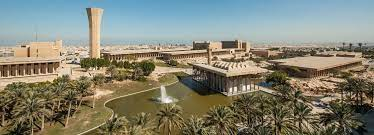

Video of What is KFUPM?.
Teaching and Research are the two core functions of KFUPM. The vision is ambitiously drafted to reflect the aspired outcomes of both. Global competitiveness of its graduates requires that they are prepared with extensive knowledge, sharp skills, ethics and instilled leadership. Carrying cutting-edge research in all its fields will enable KFUPM to make scholarly impact and contribute to national needs. In addition, as KFUPM is focusing on its research and technology development in energy and related fields, it aims to achieve leadership in this challenging area. In all of these ambitious stands, KFUPM strives to be a preeminent institution worldwide.
Our mission has three key components, teaching, research, and community service. KFUPM is committed to make a difference in all what it does. This distinct contribution is to be witnessed in the Kingdom of Saudi Arabia and beyond, keeping its focus on the fields of sciences, engineering and business. The mission statement highlights the main characteristics of its graduates which should make them ahead of their peers and making them the productive member of the society. While addressing global trend and making a scholarly impact in research, KFUPM is giving special attention to local needs for contributing to national economy. Finally, KFUPM believes that engagement with the society is an opportunity to partner with its key stakeholders, contribute to the prosperity and intellectuality of the community, and enrich the experience of KFUPM community.
© 2021 Ahmed Janabi.